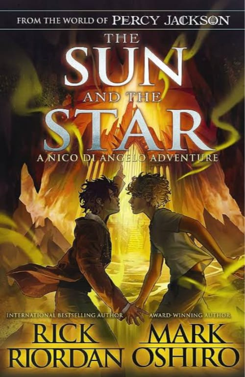

"The Sun and the Star" is a standalone short story by Rick Riordan that follows the journey of two teenagers, Luis and Lula, who are thrown together during a solar eclipse. Luis, who dreams of becoming an astronaut, is determined to witness the eclipse from a remote location, while Lula, a talented artist, reluctantly accompanies him. As they venture into the wilderness, they grapple with their own insecurities and fears, but ultimately find solace and strength in each other's company. Against the backdrop of the eclipse, Luis and Lula forge a deep connection and discover the courage to pursue their dreams, despite the obstacles they face. With its themes of friendship, self-discovery, and the wonder of the cosmos, "The Sun and the Star" is a poignant and uplifting tale that celebrates the power of human connection and the beauty of the universe.